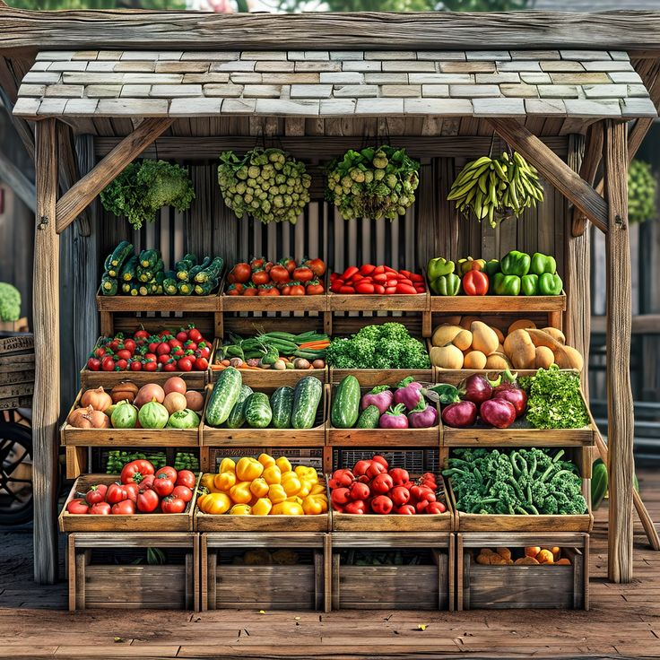
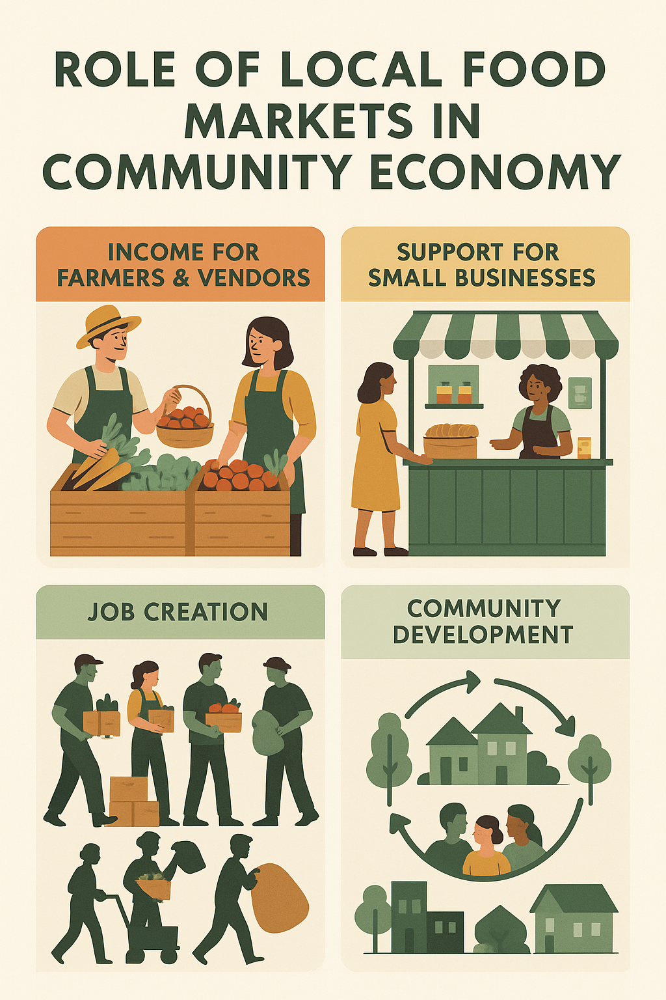
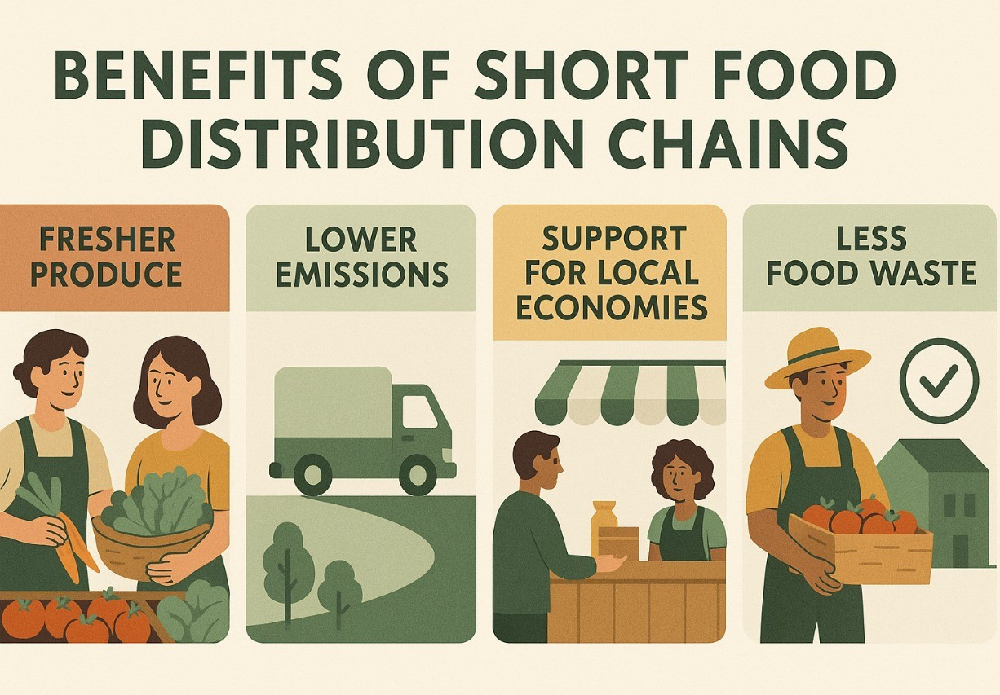
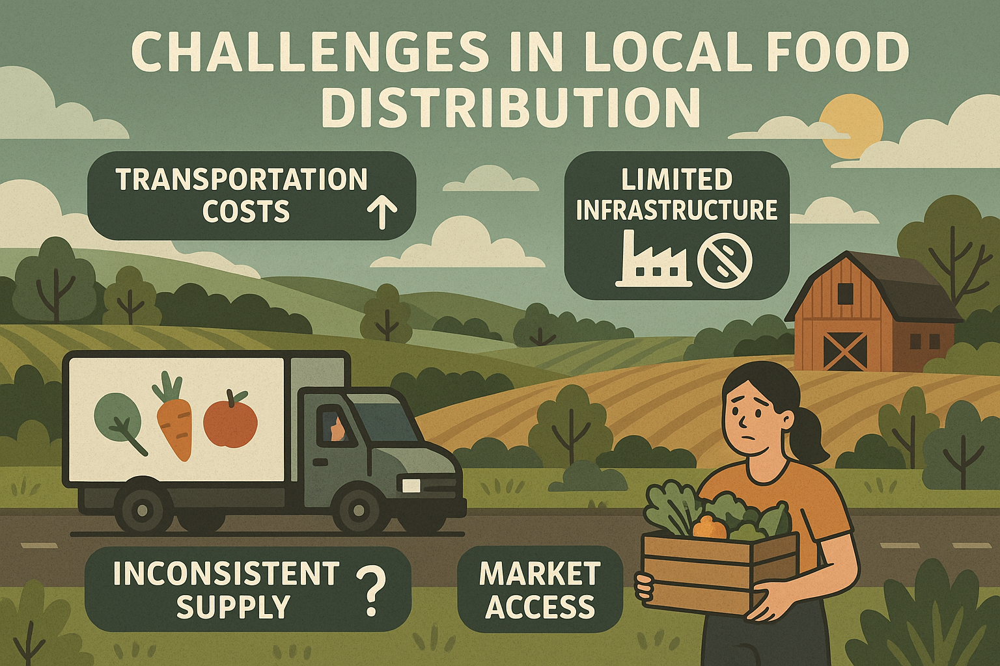
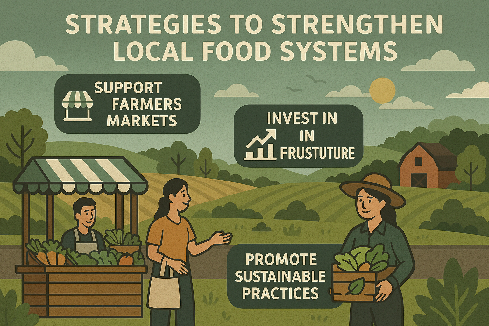

Introduction to Local Food Markets and Distribution
Introduction to Local Food Markets and Distribution
Local food markets are essential hubs within communities where farmers and food producers sell their goods directly to consumers. These markets form a vital part of food distribution systems, ensuring that fresh fruits, vegetables, grains, dairy, and meat products reach people efficiently and affordably. Unlike supermarkets, local markets often prioritise regional produce and seasonal availability, creating a deeper connection between consumers and the source of their food. Local distribution systems involve the movement of these products from farms to market stalls with minimal intermediaries, which is beneficial for both farmers and buyers. Strengthening these markets is an important strategy to achieve food security, reduce poverty, and support the UN’s Zero Hunger goal.
Local distribution systems involve the movement of these products from farms to market stalls with minimal intermediaries, which is beneficial for both farmers and buyers. Strengthening these markets is an important strategy to achieve food security, reduce poverty, and support the UN’s Zero Hunger goal.
Role of Local Food Markets in the Community Economy
Local food markets play a significant role in strengthening the economy of a community. When consumers buy from local markets, their money stays within the area and circulates among farmers, vendors, transporters, and related small businesses. This circulation generates employment opportunities not only for farmers but also for sellers, loaders, cleaners, and drivers who transport produce from farms to markets.
Moreover, these markets empower marginalised groups, especially women and youth, by offering them a platform to sell home-cooked food, handmade items, or processed farm products like yoghurt, spices, and pickles. As farmers gain direct access to consumers, they receive fair prices for their goods without losing income to middlemen, thereby improving their livelihoods and encouraging continued agricultural production within the region.
Benefits of Short Food Distribution Chains
Short food distribution chains are systems where food moves from the producer to the consumer with minimal steps in between. One major benefit is the freshness of the food, as it travels shorter distances and reaches markets quickly after harvesting. This improves its nutritional value and taste compared to food transported from faraway regions or imported from other countries. Another advantage is the reduction in transportation costs and fuel usage, which lowers the carbon footprint and supports environmental sustainability.
Short chains also build consumer trust, as people can directly talk to farmers and learn about their production methods, fostering food safety and transparency. In addition, these systems allow farmers to set fair prices and strengthen local economies by retaining income within the community rather than distributing profits to large corporations or international exporters.
Challenges in Local Food Distribution
Despite their importance, local food distribution systems face numerous challenges that hinder their effectiveness. A major issue is the lack of infrastructure, such as proper market buildings, cold storage facilities, and clean water supply, which affects the safety and quality of food sold in markets. Poor road conditions in rural areas make it difficult for farmers to transport produce to markets on time, leading to delays and spoilage. Another challenge is the seasonal nature of local produce; many items are only available during certain months, reducing variety for consumers and causing income instability for farmers during off-seasons.
Furthermore, competition from large supermarkets that provide a wide range of products, packaged goods, and convenient payment systems attracts consumers away from local markets. Farmers and market vendors often lack training in marketing and business skills, limiting their ability to expand customer reach and manage their finances effectively.
Strategies to Strengthen Local Food Systems
There are several strategies that can strengthen local food markets and distribution systems to overcome these challenges. Developing better market infrastructure is essential; this includes building clean and organised stalls, storage units with refrigeration to keep produce fresh, and safe drinking water facilities. Establishing farmer cooperatives can also be highly beneficial, as they allow farmers to pool their resources, reduce transport and marketing costs, and negotiate better prices collectively. Another effective strategy is to integrate digital platforms, such as mobile applications or websites, which connect farmers directly with consumers and small shops. This approach increases sales opportunities and reduces dependency on physical markets alone.
Introducing community-supported agriculture schemes, where consumers pay farmers in advance for a share of their harvest, provides financial stability to farmers and ensures regular supplies for buyers. Finally, supportive government policies, such as subsidies for small farmers, training programs on business management, and regulations that favour local markets over large retailers, can empower communities to build resilient and sustainable food systems that ensure no one goes hungry.